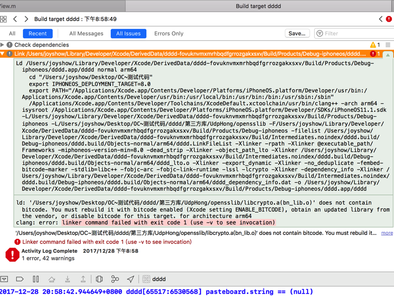
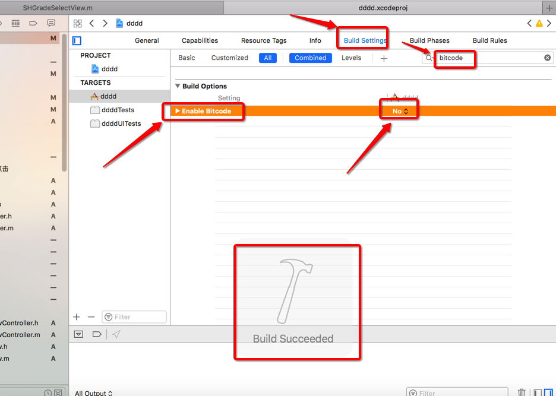

报错图显示:  问题分析：
从上述的错误中应该可以看出，这是因为一个第三方的库不兼容，我的工程中开启了 ENABLE_BITCODE （应该是升级之后自动转换的），而这个第三方的库在编译的时候没有 enable bitcode，所以导致上诉问题。
方法一 :
一种就是换成 enable bitcode 的第三方库，再有一种就是将工程的 ENABLE_BITCODE 设置为 false 就可以了。
不太方便换库 ,不建议换库;
方法二:
